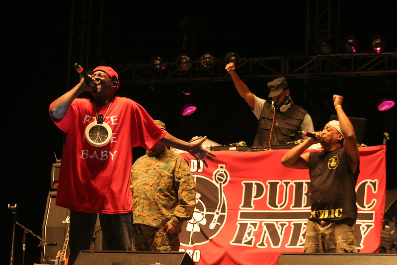

About the Band
Public Enemy was formed in Long Island, New York, 1985. Where they are most well known for their music containing music with strong political messages on frustration and concerns for the Black community, and thus causing heavy criticism from U.S. media.
Their first album, "Yo! Bum Rush the Show" was released in 1987 to critical acclaim, which pushed the group into its first steps to stardom. Later on, their third album, "Fear of a Black Planet" was released in 1989, was selected for preservation in the National Recording Registry in 2005. This album, like the other ones, were full of politically charged themes. For instance, in the song "Can't Truss it", a political statement was made in which it addresses slavery and opression of the Black community.
Image by Manuel García Melgar at https://www.flickr.com/photos/mkopke/